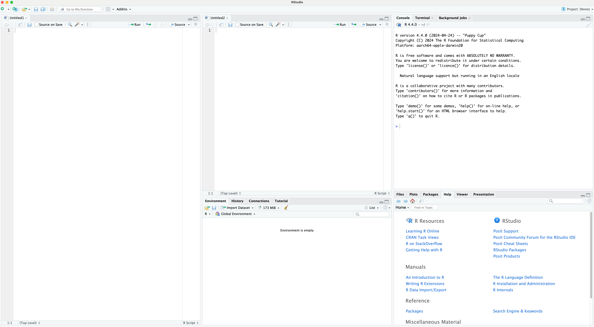

Day 1: Introduction to R Statistical Analysis Software
Summer - 2024, University of Minnesota
Rstudio
- What is it?
- Create New R code File
- Change the theme (Optional)
- Multiple panes (Optional)
- Command Palette (Optional)
You can use app to write and run R codes, but it has a terrible graphic user interface.
Rstudio is an another app build on top of R. It makes it much easier to edit R codes, see the results and organize the files.
But still, you need R to run Rstudio! R is the engine of Rstudio.
R studio looks like this:

To create new R script file, click the + button on the top-left corner of the Rstudio, or hit Ctrl + Shift + N (Cmd + Shift + N on mac).
To save the file, click the floppy disk icon , or Ctrl + S (Cmd + S on macOS).

You can change the appearance of Rstudio by going to Tools -> Global Options -> Appearance -> Editor theme and select your favorite theme.

You can have multiple code panes in Rstudio. To create a new pane, go to Tools -> Global Options -> Pane Layout -> Add Column. In the same window, you can also change the layout of the panes.
In the following image, I have two source panes. Also, I changed the layout of the panes.

Recent R-studio has a new feature called “Command Palette.”. Hit Ctrl + Shift + P (Cmd + Shift + P on macOS) on your keyboard. (or go to Tools -> Show Command Palette).
From the command palette, you can do anything!
- create a new script file (R, Rmarkdown, Quarto etc.)
- open an R script file from your folder.
- open R project.
- open new session …. etc.